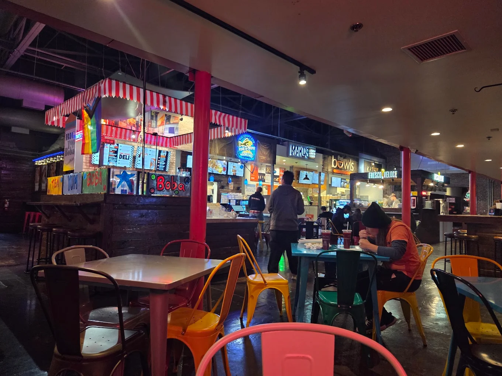
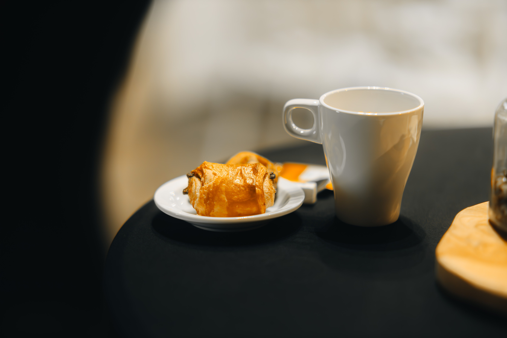

Cafés, Bites & Downtown Finds
Downtown Raleigh has a variety of restaurants, cafés, and food halls to explore.
Morgan Street Food Hall

A popular food hall featuring a variety of vendors and dining options in one location.
- Neighborhood: Warehouse District
- Address: 411 West Morgan Street, Raleigh, NC
Visit the official Morgan Street Food Hall website to explore vendors and check current hours before your visit.
Heirloom Brewshop

Make time for a coffee or tea break between downtown stops. Heirloom offers coffee, matcha drinks, teas, and pastries, giving you several options for a little afternoon treat.
- Good for: Coffee, tea, and a pastry break
- Address: 219 South West Street, Raleigh, NC
The Morning Times
Start your downtown outing with coffee and a bite to eat. The Morning Times serves locally roasted coffee and house-made bagels, with an upstairs art gallery to explore.
- Good for: Coffee, breakfast, and art
- Address: 10 East Hargett Street, Raleigh, NC
Tips for Dining Downtown
Check menus and prices before choosing a place to eat. If you have food allergies or dietary needs, contact the restaurant before your visit.